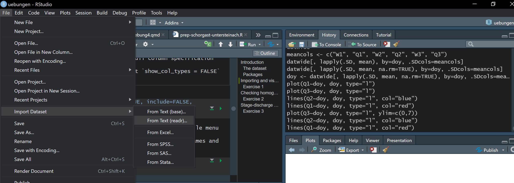

library(readr) # modernized functions to read rectangular data like csv
library(dplyr) # the most essential tidyverse packages
library(tidyr) # contains for example pivot tables
library(lubridate) # a tidyverse package for dates
library(ggplot2) # high level plotting with the grammar of graphicsAssessing water level and discharge
Hydrologie und Wasserbau - Tutorial 5
Introduction
In this tutorial, you will evaluate stage and discharge data from three hydrological stations on streams located in Bavaria. The tasks you will perform include:
- importing and visualising the data
- examining the stage-discharge relationship
- checking the homogeneity of the data
- plotting some key curves that characterise the data
- Estimating discharge at an intermediate location for a construction project
The exercises can all be completed by adapting the code that is shown in the examples, or by interpreting the plots.
The aim is to familiarise you with some statistical methods commonly used in hydrology, train you in using R, and give you an impression of working with real hydrological data.
The dataset
The dataset comes from two streams located in Bavaria about 30 km north of the city Bayreuth. The data were downloaded from the geoportal of the Gewaesserkundlicher Dienst, Bayern from the Bayrisches Landesamt fuer Umwelt (Bavarian Environmental Agency) under the CC-BY 4.0 license, which regulates the further use of the data. The Bayrisches Landesamt fuer Umwelt are gratefully acknowledged for the collecting and supplying the data.
The data are in the file schorgast_wasserstand_abfluss.csv in the course folder. The data consists of daily measurements of stage (W) in cm above the local datum and discharge (Q) in \(\mathrm{m^3 s^{-1}}\) from three hydrological stations:
- on the Schorgast stream at Wirsberg (station 1)
- on the Untere Steinach stream at Untersteinach (Station 2)
- on the Schorgast stream at Untersteinach downstream of the confluence of the Untere Steinach stream (Station 3).

The headings W1-W3 and Q1-Q3 refer to the stage and discharge in stations 1-3 respectively. The original data have been modified slightly by trimming them to the same period, and missing discharge measurements (Jan - Oct 1982) at station 2 were estimated based on the data at the other two stations.
The data are available in this form at https:// or on the course folder. Additional information about the data are contained the file readme-steinach-schorgast.txt in the course folder.
Packages
First load the necessary packages for your new R-session.
Importing and visualising the data
Before importing data into R, it is helpful to check your current working directory with getwd(), and then open the file in a text editor to check the structure of the data. For instance, which columns are there, how are they formatted (e.g. dates, decimal numbers, characters), how are columns separated, are there any additional lines above the data, do the headings contain special characters that will cause problems in R? It may be easier to fix these manually before importing the file.

In this case we have a file with one header line, the first column contains a date in format YYYY-MM-DD, and the columns are separated by commas. On my computer, the file is located up one level ../ from my working directory, and from there in the subdirectory Daten/. We use read_csv() from the readr package and assign (<-) the data the name schorgast.
schorgast <- read_csv("../data/schorgast_wasserstand_abfluss.csv")Alternatively, you can import the data using the file menu -> Import dataset -> from text (readr)

Next, let’s inspect the data to check the column names and data types and subsequently plot the data.
head(schorgast)# A tibble: 6 × 7
Datum W1 Q1 W2 Q2 W3 Q3
<date> <dbl> <dbl> <dbl> <dbl> <dbl> <dbl>
1 1968-01-01 136 1.9 NA 3.68 169 6.55
2 1968-01-02 135 1.71 NA 3.21 162 6.1
3 1968-01-03 134 1.62 NA 2.8 157 5.61
4 1968-01-04 133 1.52 NA 2.64 153 5.36
5 1968-01-05 132 1.43 NA 2.48 147 4.83
6 1968-01-06 140 2.19 NA 4.87 184 7.76class(schorgast$Datum)[1] "Date"plot(Q1 ~ Datum, data = schorgast, type = "l")
If the Datum column is not a Date class, then you will have trouble plotting the data.
Exercise 1
- Plot the stage (W) and discharge (Q) data for stations 1 to 3.
- Are there any missing data?
Checking homogeneity of the data
Many statistical tests and analyses of hydrological data assume that the data are homogeneous. Data are homogeneous when they are consistent and stationary and when there are no gradual or sudden changes. Such changes could be caused by landuse change in the catchment, a change in the measurement method. One fast and easy way to check this is to perform a double-sum test, which requires additional hydrological time from a nearby catchment. This test will not expose inhomogeneity that affects both catchments, such as climate change.
The double sum test involves adding up the daily discharge measurements at two stations for the same period, and plotting the sums against each other. If the plot produces a straight line, the data look homogeneous. A kink in the curve would suggest a sudden change in the dataset, a change in slope would indicate a gradual or systematic change. The R function cumsum() calculates the cumulative sum of the measurements (i.e. q1, q1+q2, q1+q2+q3, …).
x <- 1:10
x [1] 1 2 3 4 5 6 7 8 9 10cumsum(x) [1] 1 3 6 10 15 21 28 36 45 55We plot the double-sum for stations 1 and 2, using the columns Q1 and Q2. Add some axis labels with xlab and ylab. Then we run a simple linear regression using the function lm() so we can plot a line through the data. We add the line to the plot with the function abline(), changing the colour to red (col = "red") and line width to double the default (lwd = 2).
sum1 <- cumsum(schorgast$Q1)
sum2 <- cumsum(schorgast$Q2)
plot(sum2 ~ sum1, xlab="Station 1", ylab="Station 2")
reg1 <- lm(sum2 ~ sum1)
abline(reg1, col = "red", lwd = 2)
The line initially looks pretty straight because the black points follow the red line very closely. But what if we restrict the regression just to the first part of the series, say the first quarter, which is about 4500 observations?
plot(sum2 ~ sum1, xlab="Station 1", ylab="Station 2")
reg2 <- lm(sum2[1:4500] ~ sum1[1:4500])
abline(reg2, col = "red", lwd = 2)
The line is perhaps not as straight as it initially looked.
Exercise 2
- What does the deviation from the line in the plot above mean?
- What could have happened in the catchments of stations 1 and 2 that could explain this deviation?
- Use double-sum plots to compare the other station, i.e. station 1 and 3, and station 2 and 3. Explain your findings.
Stage-discharge relationships
Hydrological stations don’t measure discharge directly, they measure the water level (stage). Stage-discharge relationships are used to calculate the discharge from the water level. Stage-discharge relationships are developed by measuring the discharge at different water levels, and then fitting a curve to the measurements. The stage-discharge relationship depends on the cross-section of the stream bed. If the cross-section changes, then the stage-discharge relationship no longer applies, and it must be recalculated.
Exercise 3
- Plot the stage-discharge relationships for the three stations. Typically the stage is plotted on the (vertical) y-axis and the discharge on the x-axis. They should look like this:

Looking at the stage-discharge curves, there can be quite some noise. A fixed stage-discharge curve would look like a sharp line, so perhaps different stage-discharge curves were used over the years. The function ggplot() in the ggplot2 package has some functionality that can be helpful to examine this. For instance, it is possible to colour-code the points by time by setting the argument colour = Datum. This tells ggplot to colour the points according to the values in the Datum column.
ggplot(data = schorgast) +
geom_point(aes(x = Q1, y = W1, colour = Datum)) +
theme_light()
Create a plot like the one above for station 3. What can you say about how the shape of the stage-discharge curve may have changed over time?
How did the channel cross-section change over time to cause this effect?
What hydrological processes could have caused these changes?
Duration curves
Duration curves show (when created from daily flow data) show how often a certain water level or discharge is exceeded within a certain period. For instance, on how many days per year is a flow rate of 1.5 \(\mathrm{m^3 s^{-1}}\) exceeded? They show the exceedance probability of a measured value.
We do this by sorting the values we are interested in from highest to lowest, and then plotting these values for the period we are interested in.
We will consider the water level at station 3 (W3). First, the function order() sorts the data from lowest to highest and returns the corresponding indices, which we call ind. Then the function rev() reverses this order, which we call revind. Finally, we create a new data.frame that is sorted with these indices.
ind <- order(schorgast$W3)
revind <- rev(ind)
W3_sortiert <- schorgast[revind, ]
# in R, it is also possible to combine these steps
W3_sortiert <- schorgast[rev(order(schorgast$W3)), ]
head(W3_sortiert)# A tibble: 6 × 7
Datum W1 Q1 W2 Q2 W3 Q3
<date> <dbl> <dbl> <dbl> <dbl> <dbl> <dbl>
1 2003-01-03 183 7.48 245 26.2 368 38.8
2 2006-05-28 196 10.4 242 24.5 354 52
3 2011-01-14 216 13.6 264 37.6 353 57.4
4 2002-01-28 217 13.7 268 40.3 350 68.9
5 1998-11-01 205 11.5 252 30.4 350 46.7
6 1998-09-16 167 5 242 24.1 350 38.2Now we are able to plot a duration curve. We will add a column for the probability, called wahrscheinlichkeit, which we will calculate from the number of observations (nzeilen). Normally you use the dollar sign $ to access columns in a data.frame (e.g. schorgast$Datum). However, you can also use $ to create columns. R checks whether the column exists, and if it doesn’t, R will create it. Since the column wahrscheinlichkeit does not already exist, we can create it with schorgast$wahrscheinlichkeit <- ....
nzeilen <- nrow(W3_sortiert)
W3_sortiert$wahrscheinlichkeit <- (1 : nzeilen) / nzeilen
plot(W3~wahrscheinlichkeit, data = W3_sortiert, type = "l")
Now you can calculate the probability that a certain water level will be exceeded on one day. Try doing this manually by estimating the probability from the curve. You can use the function abline() to add lines to the plot as a guide. For instance abline(h = 200) will add a horizontal line at y=200, and abline(v = c(0.2, 0.4, 0.6)) will add vertical lines at x = 0.2, x = 0.4 and x = 0.6.
Exercise 4
Using the procedure described above, estimate the exceedance probability of a water level of 148 cm at station 3.
Which water level at station 3 is exceeded on 10% of days (ie probability of 0.1)?
Cumulative curves
The cumulative curve represents the integrated hydrograph (volume) of the flows. It usually starts at zero and ends at a value that is referred to as the flow or water volume of the observed period T. Cumulative curves are important for managing water storage and reservoirs. The slope of the curve is equal to the discharge.
\[ V_t = \int_0^t Q\, dt \]
or
\[ V_T = \int_0^T Q\, dt \]
Here we will calculate the cumulative distribution for certain years. To make this easier, we will first add two new columns to our dataset to display the year of the measurement, and the day of the year. The year() and yday() functions from the lubridate package do this.
schorgast$jahr <- year(schorgast$Datum)
schorgast$jahrtag <- yday(schorgast$Datum)
head(schorgast)# A tibble: 6 × 9
Datum W1 Q1 W2 Q2 W3 Q3 jahr jahrtag
<date> <dbl> <dbl> <dbl> <dbl> <dbl> <dbl> <dbl> <dbl>
1 1968-01-01 136 1.9 NA 3.68 169 6.55 1968 1
2 1968-01-02 135 1.71 NA 3.21 162 6.1 1968 2
3 1968-01-03 134 1.62 NA 2.8 157 5.61 1968 3
4 1968-01-04 133 1.52 NA 2.64 153 5.36 1968 4
5 1968-01-05 132 1.43 NA 2.48 147 4.83 1968 5
6 1968-01-06 140 2.19 NA 4.87 184 7.76 1968 6Since we have daily data, \(dt\) = 1 day. This means we can find \(V_T\) by simply adding up the measurements using cumsum().
schorgast <- schorgast |>
group_by(jahr) |>
mutate(summeQ1 = cumsum(Q1))
head(schorgast)# A tibble: 6 × 10
# Groups: jahr [1]
Datum W1 Q1 W2 Q2 W3 Q3 jahr jahrtag summeQ1
<date> <dbl> <dbl> <dbl> <dbl> <dbl> <dbl> <dbl> <dbl> <dbl>
1 1968-01-01 136 1.9 NA 3.68 169 6.55 1968 1 1.9
2 1968-01-02 135 1.71 NA 3.21 162 6.1 1968 2 3.61
3 1968-01-03 134 1.62 NA 2.8 157 5.61 1968 3 5.23
4 1968-01-04 133 1.52 NA 2.64 153 5.36 1968 4 6.75
5 1968-01-05 132 1.43 NA 2.48 147 4.83 1968 5 8.18
6 1968-01-06 140 2.19 NA 4.87 184 7.76 1968 6 10.4 Here we used the dplyr package. The dplyr package uses the “pipe” or |> to take the result from one function and pass it directly to the next function. Think of the pipe |> as the word “then”. You can interpret the function like this: take the dataset schorgast, then use group_by() to create groups that are in the same jahr, then use mutate() to create a new column called summeQ1, which is the cumulative sum (cumsum()) of the column Q1 in each group (jahr).
Now we can plot the cumulative curve for any year that we want, here 2009:
plot(summeQ1 ~ Datum, data = schorgast, subset = jahr==2009, type = "l")
Exercise 5
- plot the cumulative curve for station 2 (Q2) for the year 2006. You will first have to calculate the cumulative sum as shown above for station 1 (Q1).
The function ggplot() offers some useful features for visualising several lines. Here we would like to view several years together for comparison. First, we will convert the column jahr to a factor for better plotting. Then we will create a subset of the data for the years 1990 - 2001 so the plots don’t get too messy. Next we plot the subset of the data and set colour = jahr so that ggplot will plot each year as a separate line. theme_minimal() removes the default grey background and some other details.
# change 'jahr' to a factor
schorgast$jahr <- as.factor(schorgast$jahr)
# create a subset of the data for years 1990 - 2001
schorgast_sub <- subset(schorgast, jahr %in% 1990:2001)
# plot the data, each year in a different colour
ggplot(data = schorgast_sub) +
geom_line(aes(x = jahrtag, y = summeQ1, colour = jahr)) +
theme_minimal()
Another way to make nice plots is to create a separate panel for each year. We do this with the function facet_wrap(). We tell facet_wrap() to make a new panel for each year (~ jahr), and keep the scales constant for each panel (scales = "fixed").
# plot the data again, this time each year in a panel
ggplot(data = schorgast_sub) +
geom_line(aes(x = jahrtag, y = summeQ1)) +
facet_wrap(~jahr, scales = "fixed") +
theme_minimal()
Exercise 6
Looking at the plots above:
- which was the wettest year?
- which was the driest year?
- which year had the wettest autumn? Remember that steep parts of the curve have the highest discharge.
Estimating discharge at ungauged locations
Using the catchment areas
Hydrological gauging stations rarely exist at the location you need for your construction project. In such cases it is necessary to estimate or adapt the discharge from a different location. For instance, you may have to estimate discharge at point B using the data from station 2, which is the closest station.
| Gauging.station | Catchment | Stream | Location |
|---|---|---|---|
| Station 1 | 77.2 | Schorgast | Wirsberg |
| Station 2 | 137.4 | Untere Steinach | Untersteinach |
| Station 3 | 244.4 | Schorgast | Untersteinach |
| Point A | 91.7 | Schorgast | Between 1 and 3 |
| Point B | 112.1 | Untere Steinach | Upstream of Station 2 |
To do this, you can scale the measured discharge in proportion to the size of the catchment areas (\(A_E\)) at each location.
\[ Q_B = Q_2 \frac{A_B}{A_2} \]
where \(Q_B\) and \(Q_2\) are the discharge at point B and station 2, and \(A_B\) and \(A_2\) are the areas of the catchments at point B and station 2.
Using the data in the table above:
schorgast$QB <- schorgast$Q2 * 112.1 / 137.4
# plot the result
plot(QB ~ Datum, schorgast, subset = jahr == 1989,
type = "l", col = "red", main = "QB - 1989")
Exercise 7
Using the catchment areas given in the table, estimate the discharge at point A using the measured discharge at station 1. Add this data to the data.frame
schorgastas a new column calledQA.You could also use any of the other stations. Which do you think is best?
Using a regression approach
You may already have some discharge data at the location you are interested in. In this case you can use the correlation between the discharge at your location of interest and measured discharge at another location with a proper gauging station.
In this example, we will estimate the discharge at station 3 (Q3) using the discharge at stations 1 (Q1) and 2 (Q2). In fact, we have measured data at station 3, so we would not need to do this in practice, but we will do it anyway to test how good our method is. It makes sense to use both station 1 and 2 because station 3 should be close to the sum of both discharges and this will give us a better estimate.
In R, it is easy to perform a simple linear regression with the function lm(y ~ x, data = meinedaten). Here y is the dependent variable, ie the one we want to estimate, and x is the independent variable, ie the one that helps us make the prediction. y and x are the names of columns in meinedaten.
A multiple regression with more than one independent variable, say x1 and x2 is very easy in R. It looks like this lm(y ~ x1 + x2, data = meinedaten).
We can therefore estimate Q3 (dependent variable) from Q1 and Q2 (independent variables) like this:
reg <- lm(Q3 ~ Q1 + Q2, data = schorgast)We can view the results with summary().
summary(reg)
Call:
lm(formula = Q3 ~ Q1 + Q2, data = schorgast)
Residuals:
Min 1Q Median 3Q Max
-18.3370 -0.1842 0.0263 0.1889 21.8209
Coefficients:
Estimate Std. Error t value Pr(>|t|)
(Intercept) -0.164524 0.008880 -18.53 <2e-16 ***
Q1 1.362386 0.013070 104.23 <2e-16 ***
Q2 1.045992 0.004819 217.07 <2e-16 ***
---
Signif. codes: 0 '***' 0.001 '**' 0.01 '*' 0.05 '.' 0.1 ' ' 1
Residual standard error: 0.7561 on 17895 degrees of freedom
Multiple R-squared: 0.9635, Adjusted R-squared: 0.9635
F-statistic: 2.365e+05 on 2 and 17895 DF, p-value: < 2.2e-16The summary table gives important information about the regression. The coefficients of the regression are in the “Estimate” column. The T-statistic is given in the “t value” column. It shows that all the coefficients are highly significant with very low p-values. The “R-squared” value shows that our regression explains more than 96% of the variance, which is very good.
Let’s plot the data for one year (say 1980) to see how good our estimate of Q3 is. We use the predict() function to calculate the output of the regression and add it as a column to the dataset schorgast.
schorgast$Q3_predicted <- predict(reg)
# plot the original data in black
plot(Q3 ~ Datum, schorgast, subset = jahr == 1980, type = "l")
# add the predicted values
lines(Q3_predicted ~ Datum, schorgast, col = "red")
# add a legend
legend("topright", c("measured", "predicted"), lty=1, col = c("black", "red"))